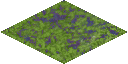

Swamp
Swamps on Mars began to exist when water ice in polar regions started
to melt due to terraforming. Water depth in this type of terrain can
change from half a meter (with mud) to ten meters. Water in swamps hosts
the genetically engineered algae, which are sent to the red planet for
further terraforming with photosynthesis. There is also some genetically
engineered fish for food production.
Only special units can travel through swamps. They contain some iron,
and can produce little food if harvested. In
battle, it will provide significant advantages to defender.

| Movement cost |
2 |
| Defence percentage |
50 |
| Resource |
Production |
| Food |
2 |
| Iron |
3 |